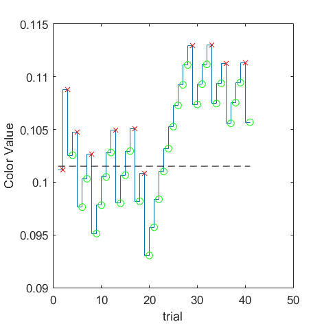
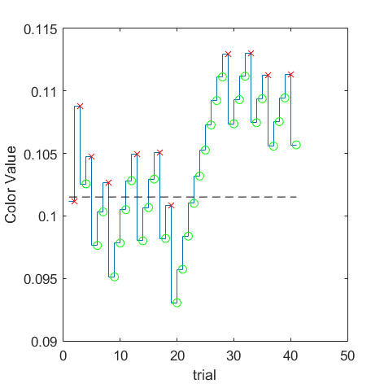

(VRR_Frequency=0.5/Size_Degree=0.5) = 0.0465043
(VRR_Frequency=0.5/Size_Degree=1) = 0.0467671
(VRR_Frequency=0.5/Size_Degree=16) = 0.0924775
(VRR_Frequency=0.5/Size_Degree=full) = 0.0944963
(VRR_Frequency=2/Size_Degree=0.5) = 0.0806656
(VRR_Frequency=2/Size_Degree=1) = 0.0961893
(VRR_Frequency=2/Size_Degree=16) = 0.103347
(VRR_Frequency=2/Size_Degree=full) = 0.114978
(VRR_Frequency=4/Size_Degree=0.5) = 0.0876268
(VRR_Frequency=4/Size_Degree=1) = 0.077682
(VRR_Frequency=4/Size_Degree=16) = 0.114828
 

(VRR_Frequency=4/Size_Degree=full) = 0.101517
(VRR_Frequency=8/Size_Degree=0.5) = 0.095833
(VRR_Frequency=8/Size_Degree=1) = 0.112882
(VRR_Frequency=8/Size_Degree=16) = 0.120788
(VRR_Frequency=8/Size_Degree=full) = 0.112385